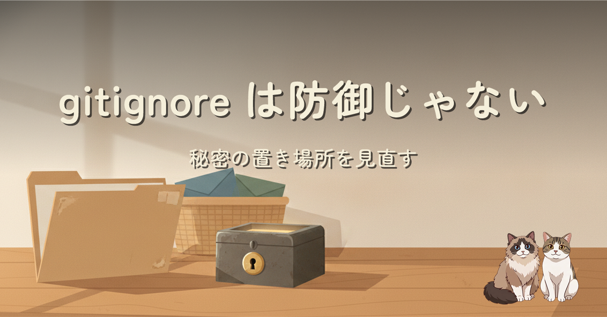
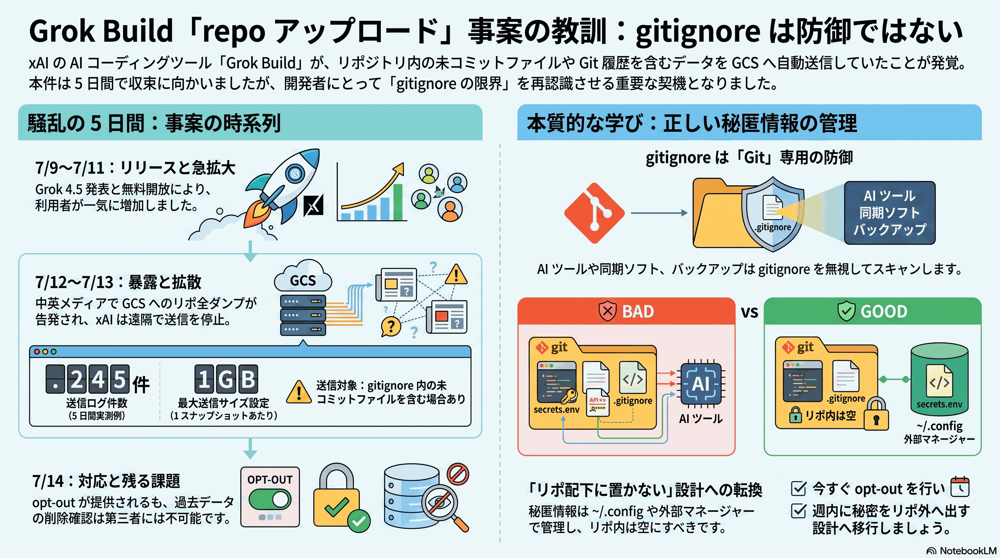
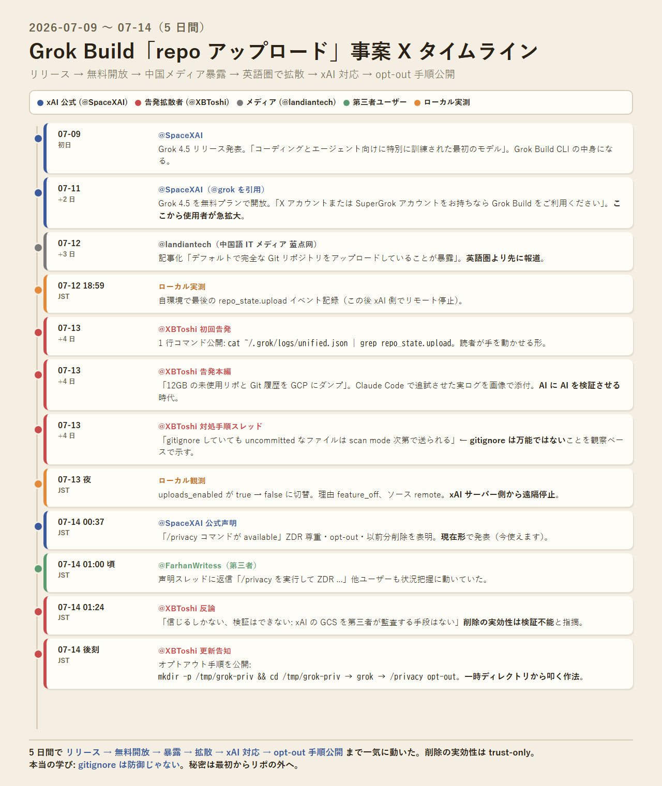

2026-07-14 · ishizakahiroshi
gitignore は防御じゃない。Grok Build の repo アップロード事案から、秘密の置き場所を見直す

Grok Build（xAI の AI コーディング支援 CLI）が cwd リポを Google Cloud Storage に送っていた事案を、X の一次ソースで 5 日間の時系列に整理しました。ローカル環境での実測と、xAI の対応、そして本題の設計原則「gitignore は防御じゃない」まで通して書いています。
本編はこちらでどうぞ。
この記事の要約

X タイムライン（5 日間）

ハイライト
- 2026-07-12 頃に中国語 IT メディア 蓝点网 が先行報道、7/13 に @XBToshi が英語圏で拡散
- 自環境の
~/.grok/logs/unified.jsonl に 245 件の送信履歴が残っていた
- xAI は 7/13 夜にリモート設定で送信停止、7/14 に
/privacy opt-out を発表
- 過去分の削除は xAI 側 GCS を第三者監査する術がなく trust-only
- 本題: gitignore は git の話。AI CLI・tar・rsync・Docker・IDE 同期・バックアップは一切尊重しない
- 正しい設計: 秘密は最初からリポ外へ（
~/.config/、sops+age、Vault 等）